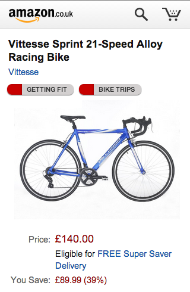
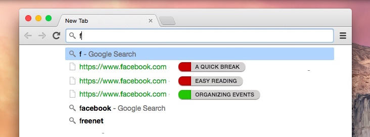
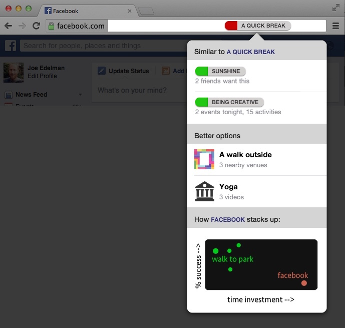
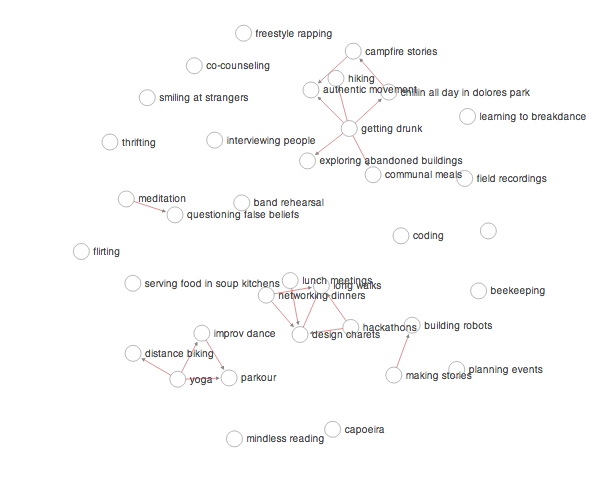
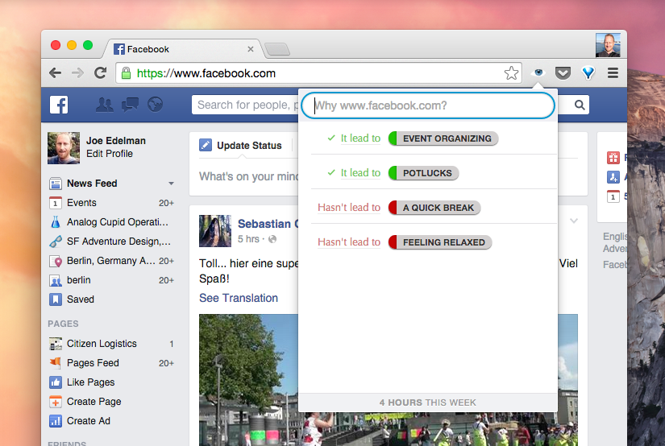

<meta name="viewport" content="width=device-width, initial-scale=1">
<link rel="apple-touch-icon-precomposed" href="/signpost-white.png" />
<link rel="stylesheet" href="onepage.css">

<title>Collective Experience Project</title>

<section class="centered">
  
  <h1>Collective Experience Project</h1>
<!--  <h2>gathering and organizing <b>collective wisdom</b> online</h2>-->
  
  <p>
  We publish open, structured data about <em>what people try</em> and <em>how it works out for them</em>.  Use our data (instead of five-star reviews or engagement metrics) to recommend products, apps, venues, or anything else humans try.
  </p>
  
  <div class="section-icons">
    <a href="#displays">
      <div class="circle" style="background-image: url(display.png)"></div>
      <h3>Overview</h3>
    </a>
    <a href="#values">
      <div class="circle" style="background-image: url(schema.png)"></div>
      <h3>Values Taxonomy</h3>
    </a>
    <a href="#experience">
      <div class="circle" style="background-image: url(schema.png)"></div>
      <h3>Experience Graph</h3>
    </a>


    <a href="#join">
      <div class="circle" style="background-image: url(residents.png)"></div>
      <h3>Get Involved</h3>
    </a>
<!--
    <a href="#foundation">
      <div class="circle" style="background-image: url(oversight.png)"></div>
      <h3>Foundation</h3>
    </a>
-->
  </div>
  
</section>


<section id="overview">
  <h3>
    <div class="circle top" style="background-image: url(display.png)"></div>
    Overview
  </h3>
    
  <p>
    Information about others' experiences <a href="http://nxhx.org/Choicemaking/">can help us make better choices</a>.  For example, browsing and buying experiences can be augmented: resources can be annotated with the likely concerns of the current user and with aggregate outcome data from other users:
  <p>
    
    
    
  </p>
    
  <p>Collective experience data can also be used to make maps of longer term trends to understand human nature and human lives.  For instance, this map shows common migrations between activities:

  <p></p>

  <p>Data is collected via our "retrospective review" interface, which looks like this:
  
  <p></p>

  <p>We are planning to collect 50,000 of these retrospective reviews in the next few months--mostly about apps and websites, but also about other resources which helped people pursue the same values.  These reviews ask questions like:  (a) what apps and websites and products have you used a lot?  (b) what was the choice to use that app about for you?  (e.g., for okcupid, "finding love": answers are normalized across repondents);  (c) did those desires work out with this app/website/product?; (d) if yes, how does it fit into your life now (schedule of use, etc);  and (e) if no, did something else help you with that? ("finding love").

  <p>At conclusion of the project we will make our dataset available as JSON and via other means under an open license. 
</section>


<section id="values">
  
  <h3>
    <div class="circle top" style="background-image: url(schema.png)"></div>
    The Values Taxonomy
  </h3>

  <p>As the user makes choices in an interface, it is vital that they can express and evolve their true intent, rather than adopting an intent that the device imagines for them ('catching up with news', 'responding to notifications', etc).  For these purposes, it is useful to have a dictionary of intents.</p>
  
  <p>Here is what the data look like:</p>
  
  <p><script src="https://gist.github.com/jxe/7a78f8e1aa91988de040.js?file=values.cson"></script></p>

  <p>For our purposes, goals ('going to college'), lifestyle components ('cooking regularly'), and codes of honor ('acting courageously') are all considered <i>accomplishments</i>.  Physical goods ('a car'), external infrastructure ('good friends'), and internal capacities ('good judgement') are all considered <i>assets</i>.  Finally, sensations ('feeling relaxed'), aesthetic judgements ('simplicity'), and metricized judgements ('exponential growth in transaction volume') are all considered <i>experiences</i>.  Technically, all assets are also considered experiences.  We hope that, together, these cover the range of what most people value and pursue.

</section>
<section id="experience">
  
  <h3>
    <div class="circle top" style="background-image: url(schema.png)"></div>
    The Experience Graph
  </h3>
  
  <p> Atop the values taxonomy, the experience graph attempts to record individuals' experience with various values and engagements, so we can learn from one each other's experience.  We record three types of positive experienced relationships between values:

  <ul>
    <li><b>WaysOfDoing</b>, e.g., "a walk in a nearby park" isWayOfDoing "a quick break" and "a quick break" hasWaysOfDoing "a walk in the park" etc.  This relation implies that, if you've done B you also feel you've done A in a satisfying way.
    <li><b>LeadIns</b>, things that, in experience, lead to other things.  e.g., "creating an event on facebook" isLeadInFor "hosting a potluck", and "hosting a potluck" hasLeadIns "creating an event on facebook"
    <li><b>BetterThans</b>, values where, if we start to care about A, we no longer care about B. e.g.,"feeling relaxed" isBetterThan "mindless reading" and "mindless reading" hasBetterThans "feeling relaxed".</li>
  </ul>
  
  <p>We also record negative and in-progress experience.</p>
  
  <ul>
    <li><b>Distractions</b>, e.g., "using facebook" isDistractionFor "feeling relaxed" and "feeling relaxed" hasDistractions "using facebook"</li>
    <li><b>Experiments</b>, something you are still exploring. E.g., "meditation" isExperimentFor "feeling relaxed" and "feeling relaxed" hasExperiments "meditation" </li>
  </ul>
  
  <p>Here's what one individual's experience looks like within the graph:</p>
  
  <p><script src="https://gist.github.com/jxe/7a78f8e1aa91988de040.js?file=experience.cson"></script></p>
 
  <p>Our database also contains metadata for resources and for users:

  <p><script src="https://gist.github.com/jxe/7a78f8e1aa91988de040.js?file=core-types.cson"></script></p>
 
</section>


<section id="join">
  <h3>
    <div class="circle top" style="background-image: url(residents.png)"></div>
    Get Involved
  </h3>
  
  <p>
    On-reflection wisdom is currently collected and dispersed in unstructured formats.  From five-star reviews of products  to <a href="http://www.quora.com/Life-Lessons/What-could-a-20-year-old-do-to-potentially-improve-their-quality-of-life-further-down-the-line">Quora posts things you wish you'd done in your 20s</a>, plain text is the norm.
  </p>
  
  <p>But if wisdom is to guide our algorithms and our interfaces in the ways that virality and sales metrics already do, structured data wisdom needs to be explorable and exciting.</p>
  
  <p>We've raised funds for <b>a series of 2-3 week residencies for information designers and journalists</b>, who will be asked to create the first stories and navigable web-based exploration experiences from this rather unique structured data source.   This is the first on-reflection structured data about human lives and experiences -- stories about how people's activities and goals change as they live, and which goals and activities they wish they had known about sooner, and so on.

  <p>Residencies for these visiting designers / data visualizers / data storytellers will be during Sep/Oct/Nov/Dec 2014.  By this time, a substantial database of reviews will have been collected, and your job will be to tell one compelling story from that data that is relevant for people's lives.  You might focus on areas like fitness, love, cities, quality time with friends, career changes, etc.

  <p>Each designer / datavisualizer / storyteller will produce a web experiment thing that will go into an online gallery, which we hope will feel kind of like Bostock's bl.ocks.org and like okcupid's OkTrends blog, but focused on this database of collective wisdom about life choices, desires, and outcomes.  Some of these web experiments will be explorable interfaces and some will be more like blog posts or stories with interactive elements.  Each designer will have the assistance of a query person to help them extract just the info they need and to keep their statistical claims in check, and *some* help from a frontend person if they need it.  We're looking mostly here for people who can take a JSON file and make a beautiful compelling exploratory experience that works on the web.  So familiarity with either d3.js or raphaeljs etc etc, and a portfolio with some of these kinds of works.  And above all a sense of beauty and humanity.

  <p>
    <a href="mailto:joe@nxhx.org">Drop an email</a> if this excites you.
  </p>
  
    <p>
   Advisors and initial funders of the Collective Experience Project will be revealed shortly.  The project is managed by <a href="mailto:joe@nxhx.org">Joe Edelman</a>, and exists to enable a new generation of <a href="http://nxhx.org/Choicemaking/">choicemaking interfaces</a> that take structured-data wisdom into account, support a notion of <em>time well spent</em>, and create the hard metrics that will allow our devices to respect our lives.
  </p>
  
 
  
  
    <!--
    
    A public outcomes database is a key part of this.  Information derived from these reviews can be used for rankings in app stores, for gating mobile notifications, for web browsing recommendations, and to make other systems of attention (feeds, shopping experiences, etc) that align with what's noble and enduringly fulfilling in human life, rather than just what generates clicks, views, downloads, purchases, etc.
    
  </p>

  <p>
    The OpenOutcomes project is <!--funded by Bret Victor and other donors, and the project is--> <!--managed by Joe Edelman.  We are looking for an additional $60k. Drop an email</a> if you'd like to help launch a new generation of discovery and browsing experiences that infer users' desired outcomes and make suggestions based on them.  Early access to our database of 50k retrospective reviews of the top apps and websites in the world will be made to organizations who commit at least $10k. We hope teams from Google Now, Apple's Siri, and Firefox New Tab Page will use our data to make outcome- and values-driven versions of their software, and that Google will adapt Android notifications, the Play store, and Chrome for a world where it's possible to highlight options that are relevant to the lives people want to live.
  </p>

-->

</section>


<section>
  <p style="color:#999; font-size:12px;">Icon images are by 
    <a href="http://thenounproject.com/term/lighthouse/4498/">Paulo Volkova</a>,
    <a href="http://thenounproject.com/term/beaker/59668/">Blake Thompson</a>,
    <a href="http://thenounproject.com/term/celebration/6215/">Scott Lewis</a>, and
    <a href="http://thenounproject.com/term/structure/32378/">Stefan Parnarov</a>.
  </p>
</section>


<script>
// smooth scrolling
if (!window.requestAnimationFrame) window.requestAnimationFrame = window.webkitRequestAnimationFrame;
document.addEventListener("DOMContentLoaded", function () {
  var duration = 250,
      easeInOutCubic = function (t) { return t < 0.5 ? 4*t*t*t : (t-1)*(2*t-2)*(2*t-2)+1; },
      position = function (start, end, elapsed, duration) {
        if (elapsed > duration) return end;
        return start + (end - start) * easeInOutCubic(elapsed / duration);
      },
      internal = document.querySelectorAll('a[href^="#"]'), 
      a,
      i;
  for (i=internal.length; a=internal[--i];){
    a.addEventListener("click", function(ev) {
      ev.preventDefault();
      if (location.hash !== this.hash) window.history.pushState(null, null, this.hash)
      var el = document.getElementById(this.hash.substring(1)),
          start = window.pageYOffset,
          end = el.getBoundingClientRect().top,
          clock = Date.now(),
          step = function(){
            var t = Date.now() - clock;
            window.scroll(0, position(start, end, t, duration));
            if (t < duration) requestAnimationFrame(step);
          };
      step();
    }, false);
  }
});

</script>